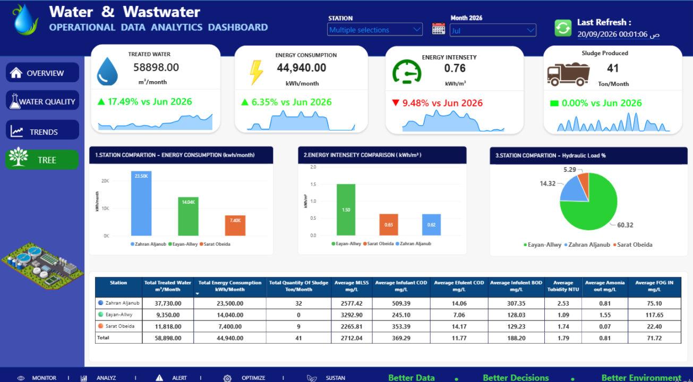

About Me
Chemistry graduate with 10 years of experience in the water and wastewater sector, combining operational expertise with data analytics to support better decisions.
Technical Skills
Featured Projects
Water & Wastewater Operational Performance Dashboard

An interactive, four-page Power BI dashboard comparing operational performance, water quality, daily trends, and environmental sustainability indicators across three treatment plants.
- Plant-level operational KPI comparisons and hydraulic loading
- COD/BOD removal efficiency and effluent quality monitoring
- Energy intensity (kWh/m³), daily trends, and sludge production
- Tree planting, green area, and estimated CO₂ sequestration
O&M Contract Financial Dashboard

An interactive Power BI dashboard for monitoring financial performance throughout a 36-month Operations & Maintenance contract.
- Financial progress vs. time progress
- Monthly net statements
- Deductions and penalties
- Spare parts budget utilization
- Contract financial performance
Contract Penalties Analysis

An interactive Power BI dashboard designed to analyze contract penalties across wastewater treatment plants, identify major causes of non-compliance, and support operational improvement decisions.
Key Insights
- Total penalties analyzed: SAR 95,105.99
- Total penalty cases: 9
- FOG-related penalties: 81.26% of total penalty value
- Pareto analysis of water quality parameters
- Penalty comparison across three treatment plants
- Monthly penalty trends and detailed records
Tools & Techniques
Power BI | Power Query | DAX | Data Modeling | Pareto Analysis | KPI Development
O&M Penalties | Pareto Analysis Case Study

A Power BI case study applying Pareto Analysis to Operations & Maintenance contract penalties to identify major cost drivers and prioritize corrective actions.
Key Insights
- Total penalties analyzed: SAR 244,791.25
- Safety violations account for 63.32% of penalties
- Missing PPE represents 74.19% of safety penalties
- Safety and sample non-compliance account for 79.57% combined
- Priority actions include PPE compliance, LOTO training, and CAPA
Tools & Techniques
Power BI | DAX | Pareto Analysis | Root Cause Analysis | KPI Development | Operational Analytics
Illustrative dataset used for analytical demonstration.